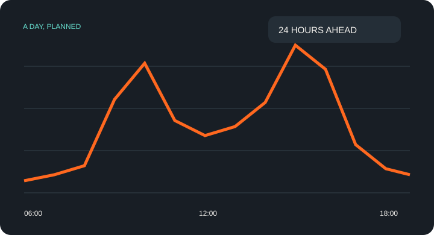
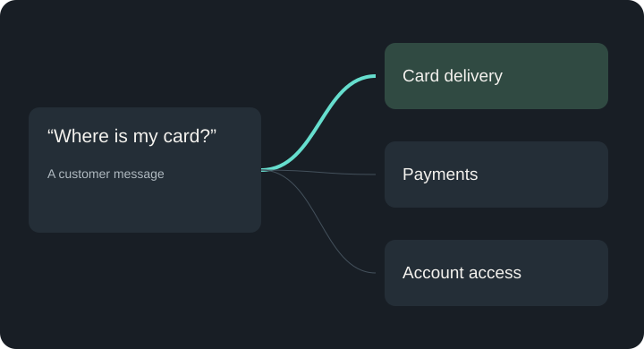
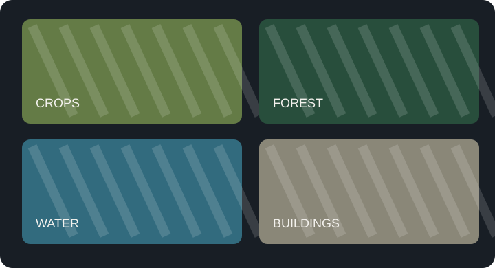
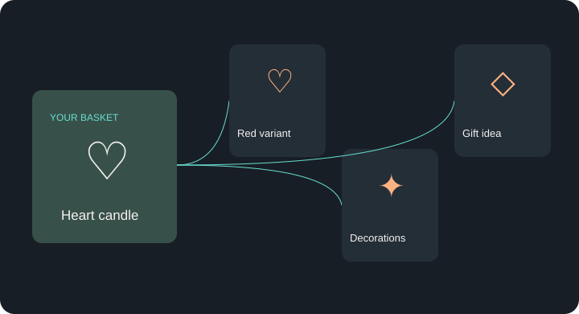
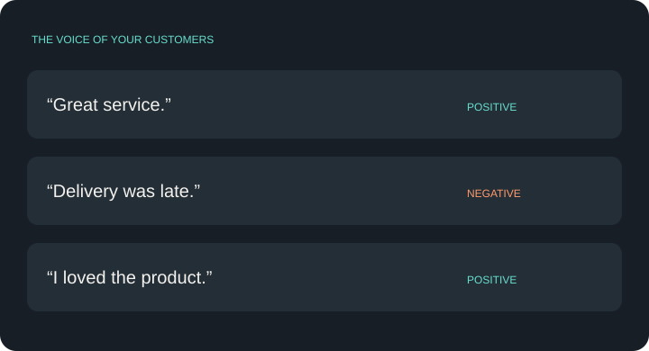
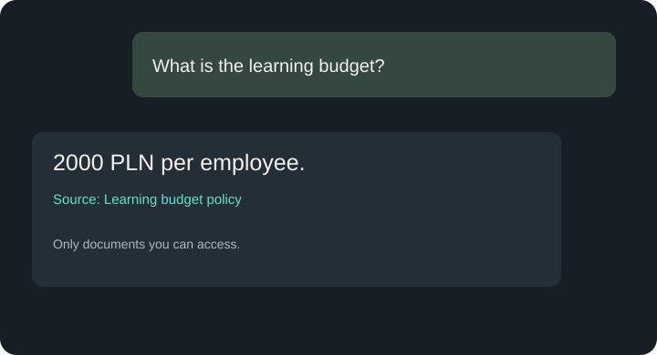

ANTILLIA / APPLIED INTELLIGENCE
Od danych
do działającego rozwiązania.
Sześć projektów machine learning i lokalny asystent wiedzy. Zobacz, jakie problemy pomagają rozwiązać i jak działają w praktyce.

DemandCast
Prognoza liczby wypożyczeń na kolejne 24 godziny.
Średni błąd w teście: 66 wypożyczeń na godzinę.
Poznaj projekt ↗
IntentRoute
Czyta wiadomość i rozpoznaje, z czym klient potrzebuje pomocy.
77 kategorii bankowych. Polski zestaw kontrolny jest mały.
Poznaj projekt ↗
TerraVision
Rozróżnia las, wodę, zabudowę i inne typy terenu na zdjęciach satelitarnych.
4050 zdjęć testowych; nowe regiony wymagają osobnej oceny.
Poznaj projekt ↗
MachineSentinel
Porównuje odczyty czujników z normalnym zakresem pracy. Prototyp badawczy.
Wykrył 29% awarii w syntetycznym teście. To za mało do samodzielnego monitoringu.
Poznaj projekt ↗
BasketWise
Dobiera propozycje do historii zakupów i zawartości koszyka.
Porównanie NDCG@10. Nie oznacza wzrostu sprzedaży o 2,24×.
Poznaj projekt ↗
ReviewPulse
Porządkuje opinie na pozytywne i negatywne, pojedynczo lub z pliku.
Dwa rodzaje opinii; bez klasy neutralnej.
Poznaj projekt ↗
AI Desk
Odpowiada na pytania i pokazuje źródło dostępne dla Twojej roli.
67/70 kontroli wyszukiwania; odpowiedzi i cytowania wymagają weryfikacji.
Poznaj projekt ↗